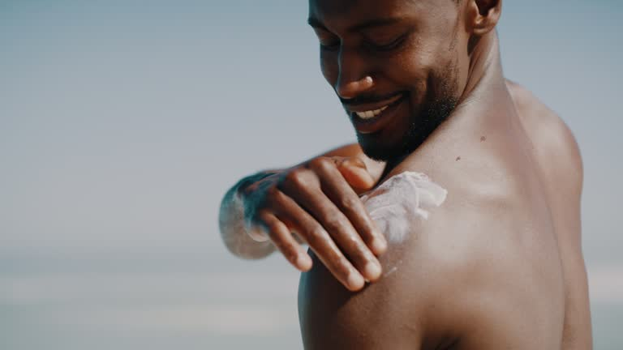

Best Sunscreens for Acne-Prone Skin – Kenya Edition

Best Sunscreens for Acne-Prone Skin – Kenya Edition
April 5, 2026 • 9 min read
If you have acne-prone or oily skin in Kenya, skipping sunscreen is one of the biggest mistakes you can make. UV rays don’t just cause sunburn — they darken post-acne dark marks (post-inflammatory hyperpigmentation or PIH), make scars more visible, and can even trigger more breakouts by irritating healing skin. In our strong equatorial sun and humid climate, daily SPF is non-negotiable for clearer, even-toned skin.
But many sunscreens feel heavy, greasy, pill under makeup, or cause new pimples — especially in hot, humid places like Nairobi, Mombasa or Kisumu. The key is choosing **mattifying, non-comedogenic** (won’t clog pores), lightweight formulas that control oil and leave no shine. Here are the best options widely available in Kenya right now (2026), with real user feedback from Kenyan skin types.
This is the gold standard for acne-prone skin in Kenya. It has a dry-touch, mattifying finish that absorbs excess oil and stays matte for hours — even in humid weather. No white cast on darker skin tones, non-comedogenic, fragrance-free. Very popular among people with oily/combination skin. Apply generously as the last step in your morning routine. Reapply every 2–3 hours outdoors. ~KES 4,000–6,000 (MYDAWA, Goodlife, Haltons, Jumia).
Another favorite in Kenya — ultra-matte, oil-absorbing technology keeps shine away for 8+ hours. Lightweight, no greasy feel, broad-spectrum protection. Excellent for oily and acne-prone skin in hot weather. Leaves skin feeling dry and smooth. ~KES 3,000–4,500 (Jumia, pharmacies, Western Cosmetics).
Formulated specifically for acne-prone skin — controls sebum production, mattifies, reduces shine and prevents new breakouts. Fragrance-free, non-comedogenic. Great for people who get oily quickly in heat. ~KES 3,500–5,000 (available online and select pharmacies).
Affordable, reliable option with dry-touch technology. Broad-spectrum, lightweight, matte finish. Good starter sunscreen for acne-prone skin. Widely available in supermarkets and pharmacies. ~KES 2,000–3,000.
Water-like texture, ultra-light, matte finish. Absorbs instantly with no residue. Excellent for humid days and under makeup. A bit pricier but loved by many with oily/acne skin. ~KES 5,000–7,000 (online or select clinics).
Sunscreen isn’t just for beach days — it’s daily medicine to stop dark marks from getting worse and protect healing skin. Not sure which one suits your skin type or routine best? Message us — we’ll recommend options based on your skin concerns and budget.